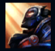
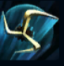
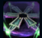
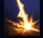
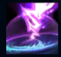

Viktor
| Viktor The Machine Herald | |
|---|---|
| Release date | 29.12.2011 |
| Class | Battlemage |
| Positions | Middle |
| Resource | Mana |
| Range type | Ranged |
| Adaptive type | Magic |
| Base statistics | |||
| Health | 530 – 2060 | Mana | 405 – 1170 |
| Health regen. | 8 – 19.05 |
Mana regen. | 8 – 21.6 |
| Armor | 23 – 91 | Attack damage | 53 – 104 |
| Magic resist. | 30 – 38.5 | Crit. damage | 175% |
| Move. speed | 335 | Attack range | 525 |
Viktor e profetul unei noi ere a tehnologiei și și-a dedicat viața progresului omenirii. Fiind un idealist care încearcă să aducă locuitorii Zaunului la un nou nivel de înțelegere, crede că potențialul adevărat al oamenilor se poate realiza doar prin acceptarea cu brațele deschise a unei evoluții glorioase a tehnologiei. Viktor și-a augmentat deja trupul prin oțel și știință, iar acum merge cu zel în întâmpinarea unui viitor strălucit. |  |
EVOLUȚIE GLORIOASĂ Viktor își poate augmenta abilitățile de bază atunci când ucide inamici. |
||
|---|---|---|---|---|
 |
TRANSFER DE ENERGIE Viktor atacă o unitate inamică, provocându-i daune magice, câștigând un scut și augmentându-și următorul atac de bază. Augmentare: valoarea scutului ''Transferului de energie'' crește cu 60%, iar Viktor câștigă viteză de mișcare bonus după folosire. |
|||
 |
CÂMP GRAVITAȚIONAL Viktor invocă un câmp gravitațional puternic, care încetinește inamicii din raza sa. Inamicii care rămân prea mult timp în zona dispozitivului sunt amețiți. Augmentare: vrăjile neperiodice ale lui Viktor le aplică o încetinire inamicilor. |
|||
|  |
RAZA MORȚII Viktor își folosește brațul robotic pentru a lansa o rază generatoare de haos care se propagă în linie dreaptă, provocându-le daune tuturor inamicilor de pe traiectorie. Augmentare: după folosirea ''Razei morții'' are loc o explozie ce provoacă daune magice. |
|||
 |
FURTUNA HAOSULUI Viktor invocă un fenomen care provoacă daune magice și întrerupe pregătirea vrăjilor inamice. Apoi, acesta le provoacă periodic daune magice tuturor inamicilor din apropiere. Viktor poate redirecționa fenomenul. Augmentare: ''Furtuna haosului'' se deplasează cu 25% mai repede. |